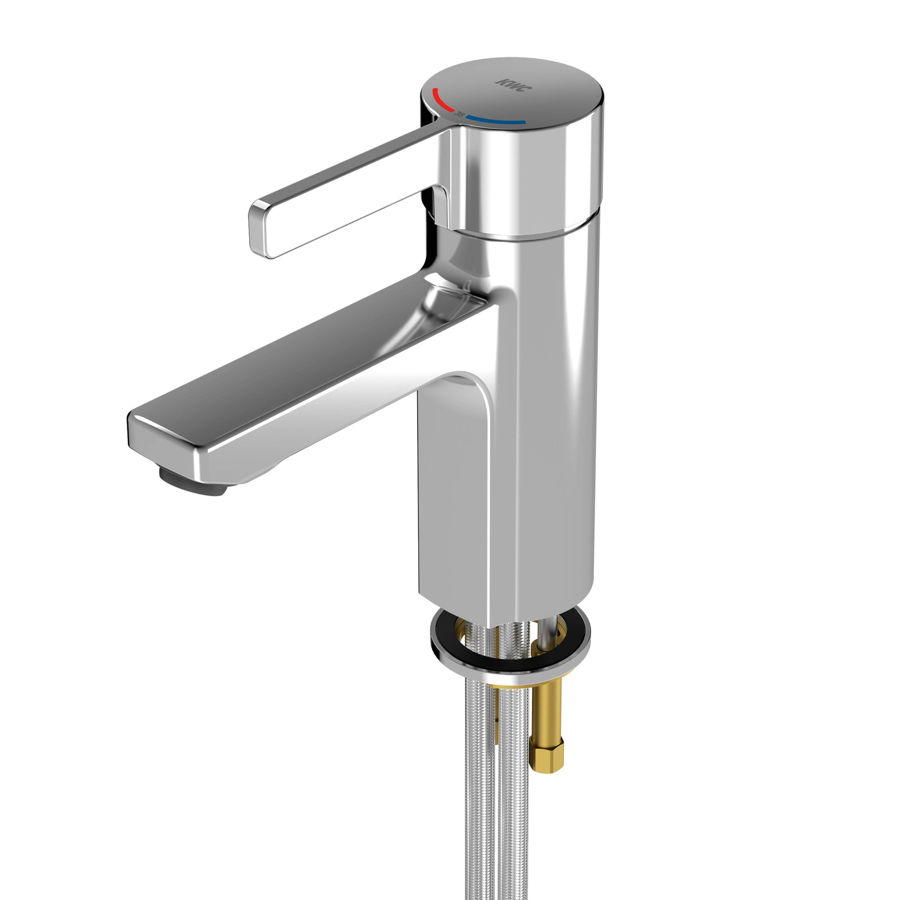

KWC Aquarotter GmbH
F5L-Therm Thermostat-Einhebel-Standbatterie
F5LT1002 - 2030066481
F5L-Therm Thermostat-Einhebelmischer als Standbatterie DN 15 für Waschanlagen. Thermostatisch gesteuerte Mischkartusche mit Dehnstoffelement und aktivem Verbrühungsschutz sowie einstellbarem, verdrehsicherem Temperaturanschlag und Keramikscheibentechnik. Mit Vorrichtung für die optionale Hygieneeinheit zur Durchführung einer automatischen Hygienespülung, programmgesteuerten thermischen Desinfektion und Speicherung von Statistikdaten.
Kontakt
Parkstraße 1-5 | 14974 Ludwigsfelde | Deutschland
Telefon +49 3378 818455 | kwc-info.de@kwc.com